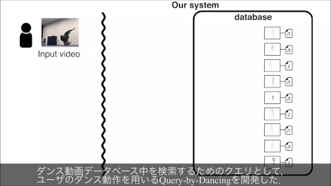
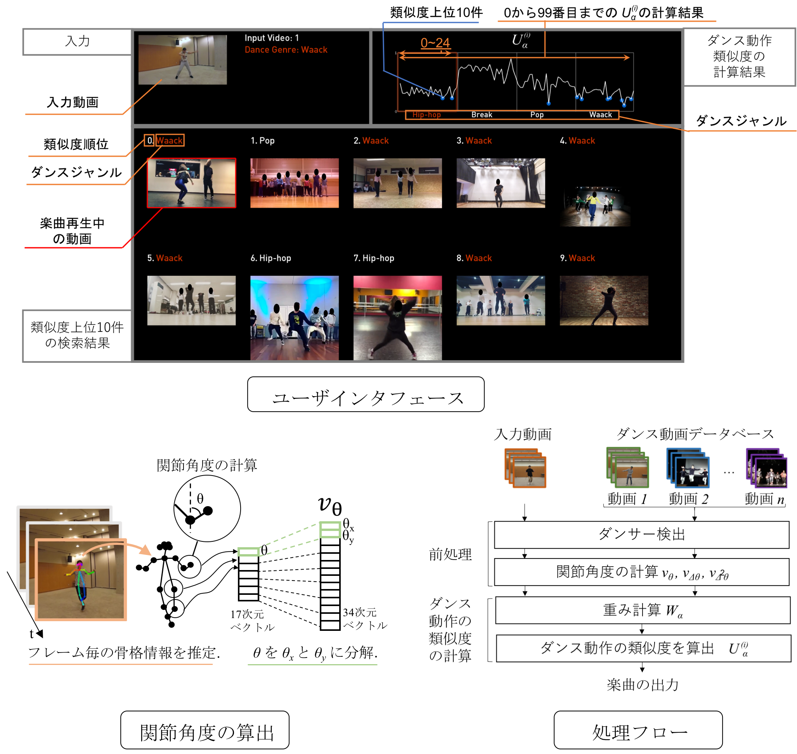

ダンス動作をクエリとしてダンス楽曲を検索できる楽曲検索システムQuery-by-Dancing を提案する． ダンサーはダンスに用いる楽曲を検索する際に，自分が踊ろうとしているダンス動作に似た動作が含まれるダンス動画を参考にして楽曲を探すことがある． しかし，従来の楽曲検索システムにダンス動作をクエリとするものはなかった． そこで，ダンス動画データベース中を検索するためのクエリとして，ユーザのダンス動作を用いるQuery-by-Dancing を開発した． このシステムは，クエリであるダンスに含まれるポーズ（姿勢）とモーション（動作）を抽出し，
それらに類似したポーズとモーションが含まれるダンス動画を検索する． 得られたダンス動画に付随する楽曲を用いることで，自分のダンスに適した楽曲を検索できる． システムの実装と実験の結果，ダンスと楽曲の関係性を考慮しながらダンスと楽曲をともに探索していく，新しいインタラクションの可能性が示唆された．

Seamless: 産総研、ダンス動画を入力に、ダンス楽曲を検索できる楽曲検索システム「Query-by-Dancing」を発表(10/02/2018).
[LINK]
- 土田修平, 深山 覚, 後藤真孝: Query-by-Dancing: 身体動作の類似性に基づくダンス楽曲検索システム, 第25回インタラクティブシステムとソフトウェアに関するワークショップ2017論文集, (Sep. 2018).